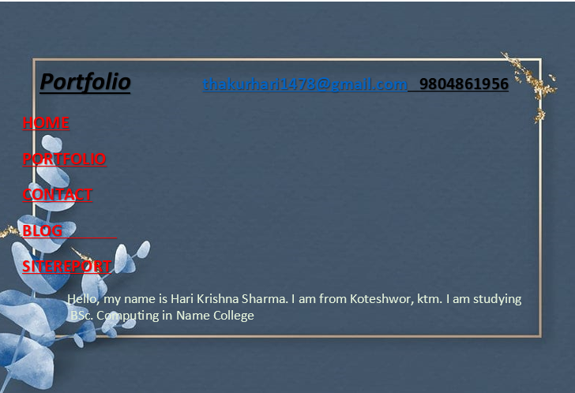
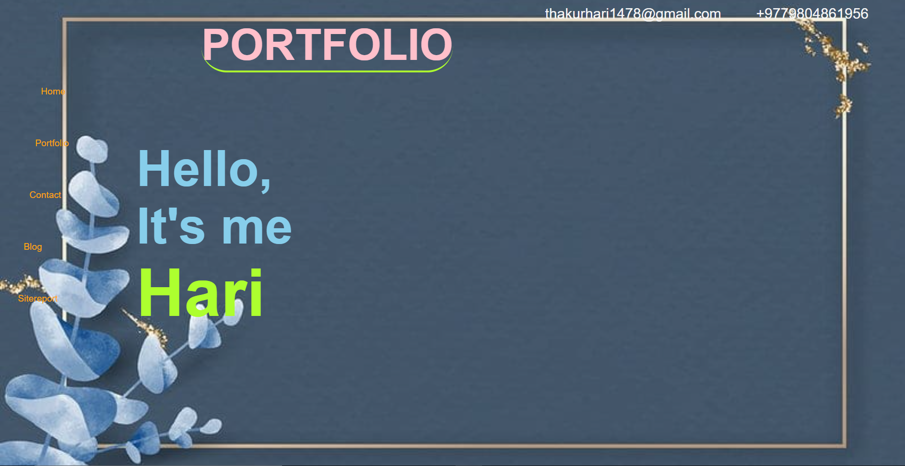
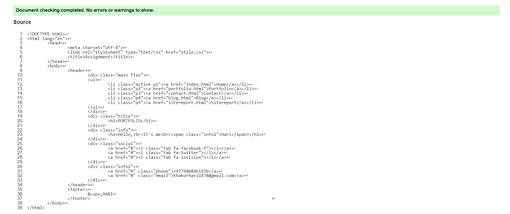

Sitereport
Experience
Hey, it's me Hari Krishna Sharma. I am to explain about the code written in HTML and CSS.
I enjoy learning new things because. I'm particularly interested in picking up different non-human languages. I recently enrolled in NAMI College since I learned that it offers BSc. Computing courses and that the instructors are really amiable. Since our module teacher Mr. Ankit Thapa (CSY1018) started by teaching us the course of HTML and CSS, we are now capable of creating websites. Additionally, he showed us how to pull and push the programs on github. As our teacher instructed us directly and without hindrance, designing and creating a user-friendly website using CSS was a simple process.
Our Reflective Discussions
In essence, reflective discussion encourages students to declare and reflect on what they have said, heard, or learned. Since this module motivates and teaches us to create numerous websites and webpages, learning web development has been for me the best learning experience I've ever had. It motivates us to build websites that are user-friendly and responsive so that they look good on both tiny and large displays. For the user interface to be excellent, the website must be responsive across all devices. I also gained skills in bug detection and effective debugging. Never before has learning been so simple and efficient. In a very short amount of time, I learned a great deal.
Site Develpoment
I tried to make the site look more attractive by changing its layout and design periodically, but I repeatedly failed. I finally made the decision to alter the entire website..

The picture up top represents the first project I created for term 1. I made all of the changes because the UI was severely flawed because the site was neither user-friendly nor responsive. As a result, I rebuilt the website utilizing the grid display, creating it as follows:

TThe completed webpage is seen in the image above. The website's User Interface (UI) is excellent. Users can see that the general website layout is consistent across all pages. Every page of the website can use the navigation menu. The website is also responsive, meaning that it functions properly on a range of screen sizes. The navigation menu is concealed behind the hamburger icon, which only happens on mobile devices.
I nearly exclusively utilized sans-serif font for headings, sub-headings, and other parts of the document. Below the primary header is a navigation menu. Every single page of the website has the same general layout. A navigation menu allows users to access each page. The website's navigation menu is also the same on all of its pages.
Validation Reports
Validation index.html screenshot

Validated protfolia.html screenshot

Validated contact.html screenshot

Validated index.html screenshot

Validated style.css screenshot